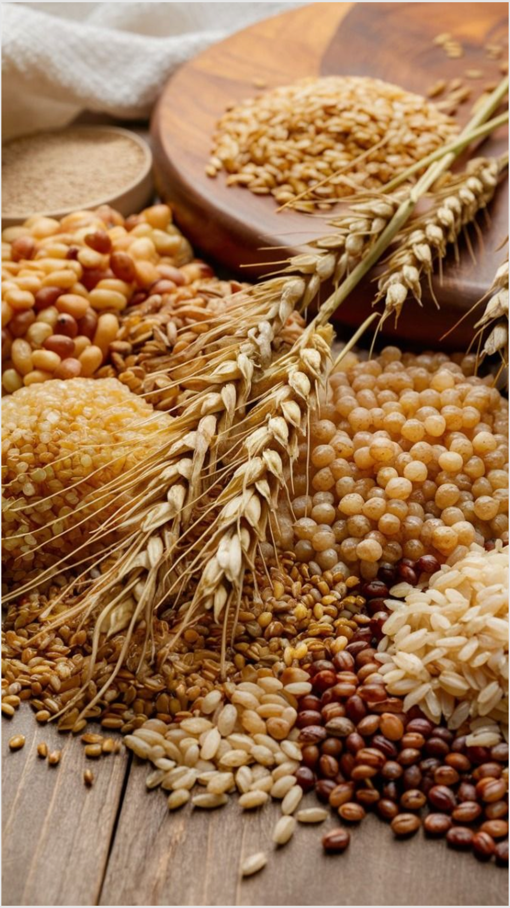
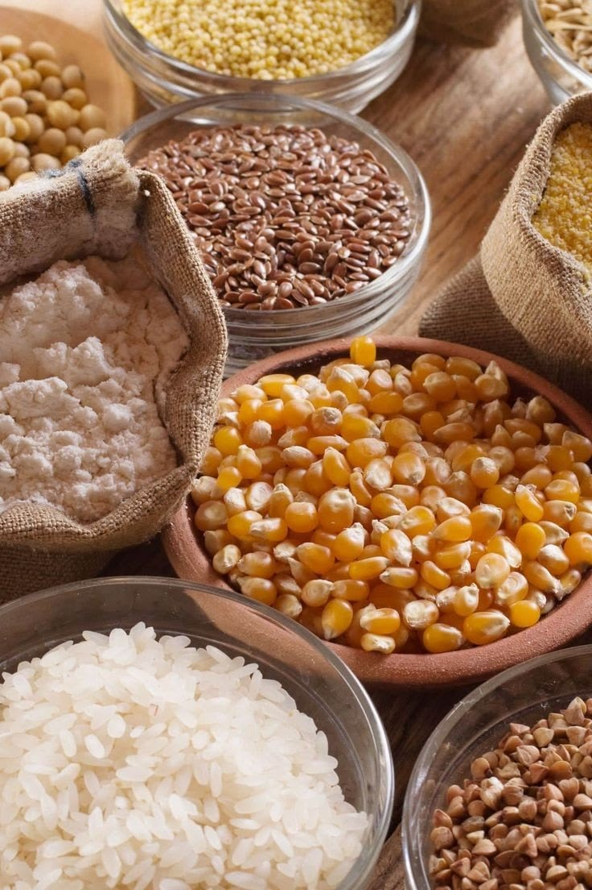
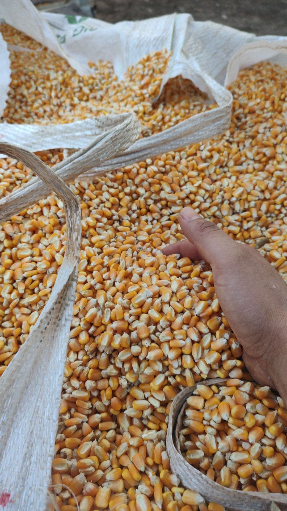
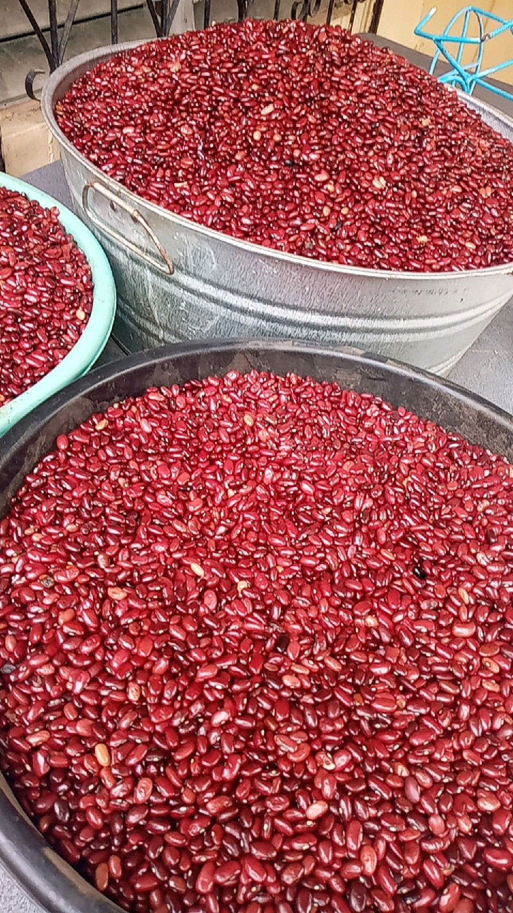
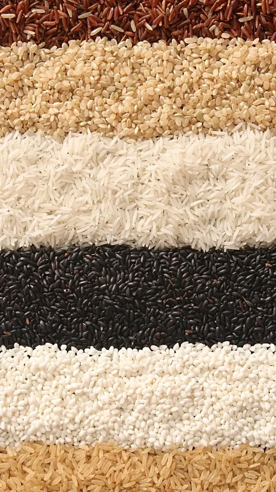
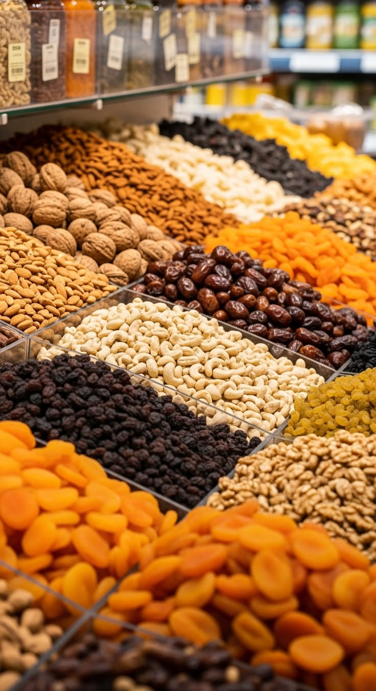
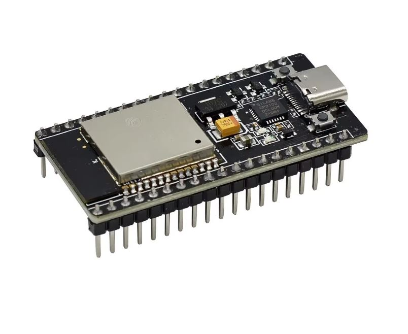
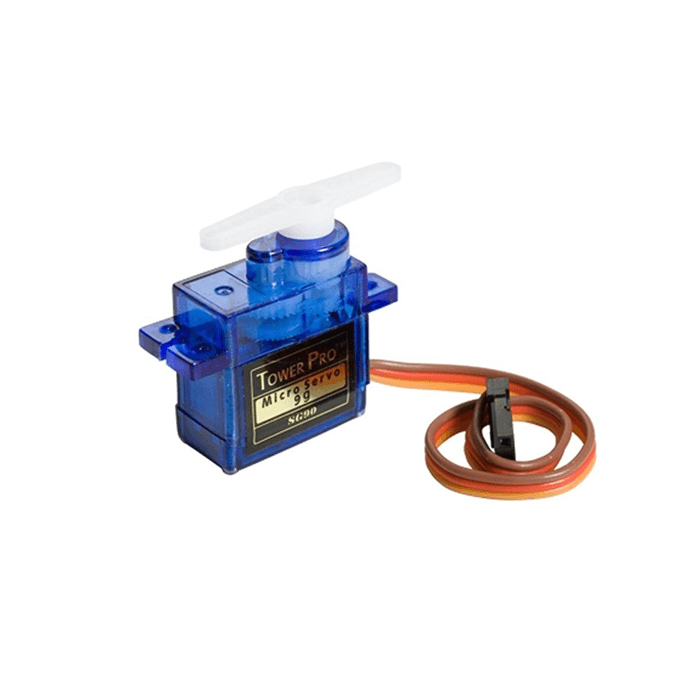
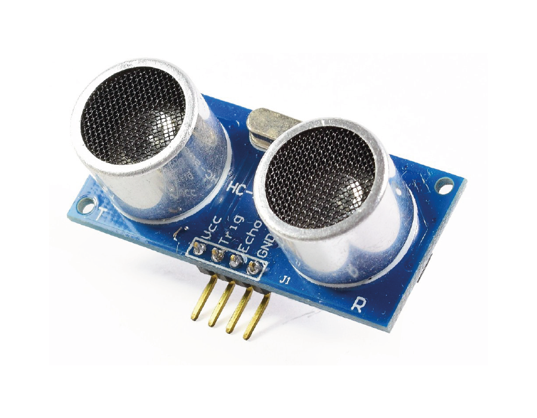

Territorio y producción local
Ubaté es el contexto territorial de esta propuesta para apoyar el secado y almacenamiento de granos.
Fotografía: KarlitoX · Wikimedia Commons · CC BY-SA 4.0Un sistema inteligente que vigila tu grano las 24 horas, cierra la cubierta cuando llueve y te avisa al celular antes de que el moho aparezca.
Cerca del 14 % de los alimentos del mundo se pierde entre la cosecha y la venta (FAO, 2019). Esta es nuestra respuesta.
Una propuesta académica pensada para el contexto agropecuario de Ubaté, Cundinamarca.
Ubaté es el contexto territorial de esta propuesta para apoyar el secado y almacenamiento de granos.
Fotografía: KarlitoX · Wikimedia Commons · CC BY-SA 4.0El prototipo busca aportar al trabajo de productores y actores agrícolas de la región. Los convenios y validaciones se presentarán cuando estén confirmados.
Proyecto académicoMermas causadas por el clima y por un almacenamiento deficiente.

El agua sobre el grano extendido aumenta la humedad y favorece el moho.

El aire saturado eleva la temperatura interna y deteriora el producto.

El sensor de gases ayuda a detectar a tiempo focos de deterioro en bodegas cerradas.

La cubierta protectora se mueve de inmediato según los sensores del clima.
Estrategia de control para mantener estables las condiciones del grano.
El nodo central procesa el entorno exterior y acciona la cubierta antes de que el agua alcance el grano.

Protege el producto sin necesidad de un operario presente.
Variables vigiladas para que el grano almacenado conserve sus propiedades comerciales.

Historial por lote listo para auditorías de calidad.
Módulos seleccionados por su costo, disponibilidad y desempeño.

Lee las señales de los sensores y comunica las mediciones al panel mediante Wi-Fi.

Detecta humedad superficial para reaccionar al instante.

Control angular preciso para mover el techo.

Mide el nivel del producto sin contacto.
Detecta movimiento en el área de almacenamiento para apoyar la vigilancia del recinto.
Registra cambios relativos en la composición del aire para generar alertas preventivas; requiere calibración y no mide ppm directamente.
Cinco fases para llegar a una solución útil. Toca cada paso para conocerlo.
Conecte el dispositivo con su dirección IP en la red local o active el modo demostración para validar umbrales y alertas.
Proyecto universitario · Ubaté, Cundinamarca · Universidad de Cundinamarca
Humedad Temperatura Fotorresistencia Aire (gases)
Equipo de Ingeniería de Sistemas y Computación de la Universidad de Cundinamarca, Seccional Ubaté.
Ingeniería de Sistemas y Computación
4.º semestre · Universidad de Cundinamarca
Ingeniería de Sistemas y Computación
4.º semestre · Universidad de Cundinamarca
Ingeniería de Sistemas y Computación
4.º semestre · Universidad de Cundinamarca
Ingeniería de Sistemas y Computación
4.º semestre · Universidad de Cundinamarca
Desarrollar soluciones IoT accesibles que protejan la cosecha de los productores rurales de Ubaté durante el secado y el almacenamiento, reduciendo pérdidas y acercando la tecnología al campo.
Ser un referente regional en tecnología poscosecha de bajo costo, con un sistema probado en campo que pueda replicarse en veredas y asociaciones de productores de Cundinamarca.
Escríbenos y te contamos cómo AgroSecado IoT puede funcionar en tu finca o bodega.